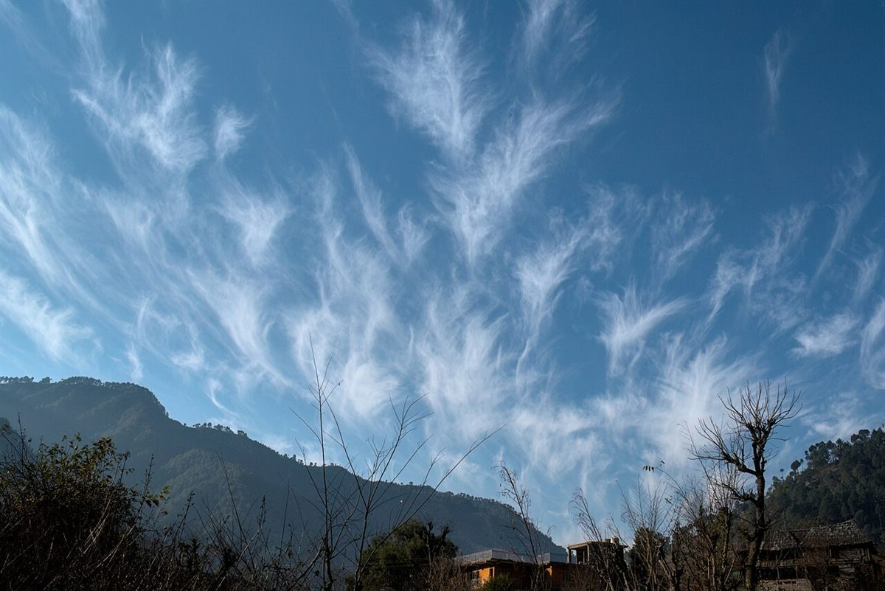
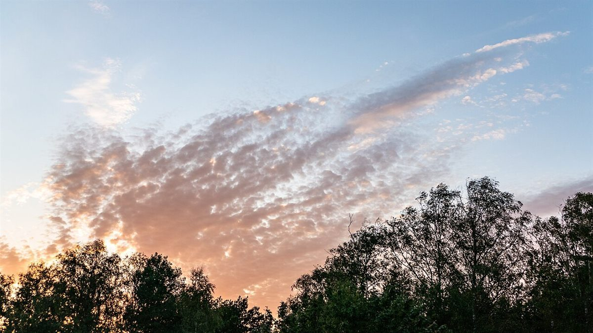

昼番 / DAY SHIFT
夜番 / NIGHT SHIFT
ムーンサン
記入欄 1 / 確認できている事項
大分県豊後高田市のカフェ「ムーンサン」
お店について確認できているのは、所在地とInstagramのアカウントだけです。営業時間・メニュー・価格・ご予約・駐車場は準備中です。 準備中
| 所在地 | 〒879-0606 大分県豊後高田市玉津403番地 |
|---|---|
| 電話 | なし |
| 営業時間 | 準備中 |
| 定休日 | 準備中 |
| ご予約 | 準備中 |
| 駐車場 | 準備中 |
| SNS | Instagram @moonsun405 |
制作側の連想(お店の理念・由来とは無関係)
テーマは「昼番から夜番への引き継ぎ書」です。店名の由来は分かりません。制作側は「ムーン」と「サン」という響きから、空の昼番(太陽)と夜番(月)が交代するイメージを連想し、各ページを引き継ぎ書の記入欄に見立てました。お店の理念・由来とは無関係の、制作側の連想です。
記入欄 2 / 昼番の記録(イメージ)
昼番: 空を見張る
写真は豊後高田市やお店のものではありません。時間帯のイメージで選んだ、国外・撮影地不明のフリー素材です。


記入欄 3 / 引き継ぎ(夕方)
夕方: 昼番から夜番へ



記入欄 4 / 夜番の記録(イメージ)
夜番: 星を数える
夜番への申し送りは「特になし」。以上で引き継ぎ書は終わりです。続きはお店のInstagramで。@moonsun405